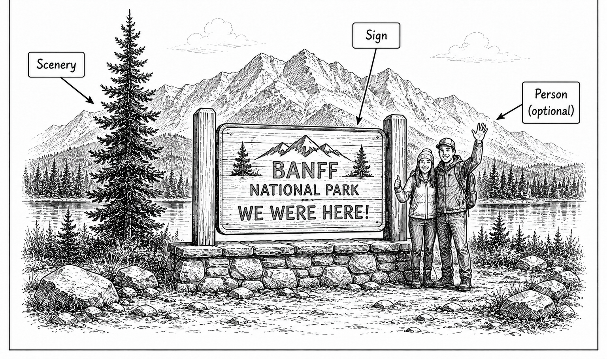

Primary real example
Town of Banff - Banff Sign Relocation
The Banff sign and its location.
Open the original exampleShot 46 | Any day | Trip-wide | Canada
Reference links for this shot.

These examples stay on their original sites. No photographer images are copied into this guide.
Primary real example
The Banff sign and its location.
Open the original example